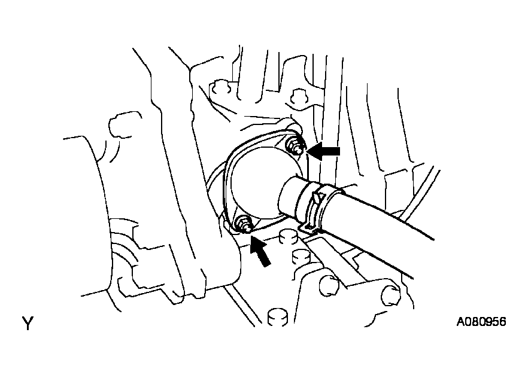

Home
>>
Scion
>>
2006
>>
xB Standard
>>
Repair and Diagnosis
>>
Engine Mechanical
>>
Cooling System (Mechanical)
>>
Cooling (1NZ-FE)
>>
Thermostat
>>
Removal
Cooling (1NZ-FE): Thermostat: Removal
DRAIN ENGINE
COOLANT
REMOVE WATER INLET
Remove the 2 nuts and disconnect the water inlet from the cylinder block.
Fig 1: Disconnecting Water Inlet From Cylinder Block

Courtesy of © TOYOTA, LICENSE AGREEMENT TMS1002
REMOVE THERMOSTAT